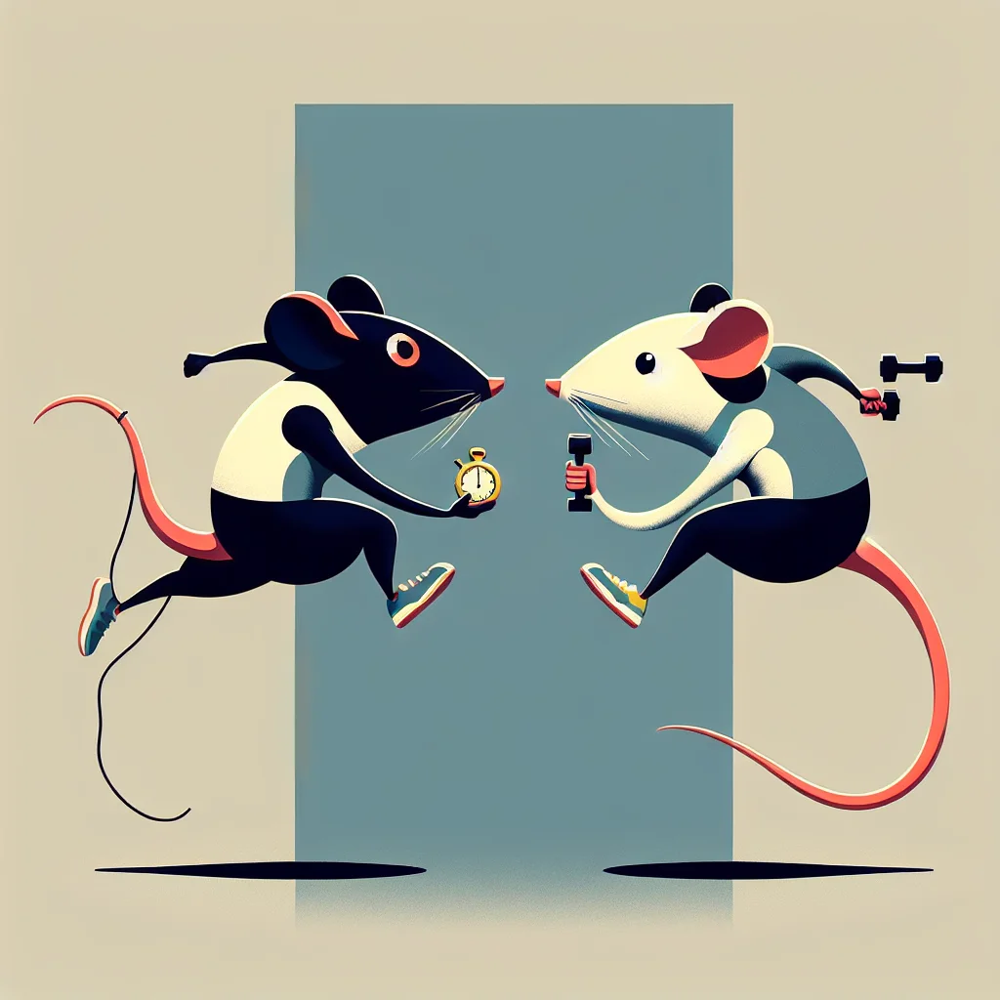

{kind=link}
{kind=link}
Rat Athletics has always been a cornerstone of Ratopolis society, dating back to the early days when rats first took to the tracks and fields in friendly competition. Today, it includes a variety of events, from cheese-chasing to wheel-running, attracting massive crowds and devoted fans.
At the heart of this thrilling world are key figures such as Speedy Squeaker and Mighty Whiskers. These athletes are household names, celebrated for their unmatched speed and strength. Speedy Squeaker, known for his lightning-quick reflexes, is currently the reigning champion in the 100-cheese dash. His rival, Mighty Whiskers, is famed for his endurance and has consistently dominated the Whisker Marathon.
The rivalry between Speedy Squeaker and Mighty Whiskers is legendary. "It's not just about winning; it's about out-squeaking your rival," Speedy Squeaker explains in an exclusive interview. This intense competition pushes both athletes to their limits, fueling dramatic races and nail-biting finishes.
Yet, amid these fierce rivalries, unexpected friendships flourish. Take the bond between Speedy Squeaker and another athlete, Tiny Tail. "Speedy and I may compete against each other, but we train together and push each other to be better," Tiny Tail shares. Their camaraderie is a testament to the complex dynamics within Rat Athletics.
Behind the scenes, the lives of these athletes are far from glamorous. Daily routines are grueling, involving rigorous training regimens and strict diets. "Every race is a whisker away from victory or defeat," says Mighty Whiskers, highlighting the continuous pressure they face. The role of coaches and support teams is crucial, providing guidance and ensuring the athletes maintain peak performance.
Personal sacrifices are a constant companion to these top athletes. Speedy Squeaker, for instance, often misses family gatherings and social events due to his demanding schedule. "My family understands, but it's tough missing out on important moments," he admits. Similarly, Mighty Whiskers had to forego vacations and leisure time to focus on training.
The dedication of these athletes does not go unnoticed by their fans. "Watching these athletes is like seeing a cheese chase in action!" exclaims Cheddar Chaser, a local fan. Whisker Wiggler, a fitness enthusiast, adds, "Their dedication is truly inspiring. It makes me want to run on my wheel a bit longer."
While current rivalries and friendships capture the spotlight, historical rivalries have also shaped Rat Athletics. Tales of past competitors set the stage for today's battles, imbuing the sport with a rich legacy. Looking ahead, the future of Rat Athletics promises even more excitement, with rising stars eager to make their mark and experts predicting new rivalries and alliances.
Critics argue that the intense focus on competition can lead to burnout and stress for the athletes. Some believe that the pressure to perform might overshadow the joy of the sport. However, dedicated supporters like Speedy Squeaker argue that the journey, challenges, and personal growth make it all worthwhile.
In summarizing the complex landscape of Rat Athletics, it is essential to recognize the passions and sacrifices that drive these top athletes. Their stories of rivalry, friendship, and dedication resonate deeply with fans and fellow competitors alike.
"In the end, it's not just about the race; it's about the journey and the whiskers we grow along the way," Speedy Squeaker aptly concludes. This sentiment invites readers to reflect on their own journeys, emphasizing the value of persistence and companionship in any endeavor.
As we cheer for our favorite athletes and witness their incredible feats, let us also acknowledge the profound journeys they undertake. The world of Rat Athletics is more than a race to the finish; it's a testament to the resilience, spirit, and interconnectedness of Ratopolis itself.
Looking for more in-depth news and exclusive content? Follow RAT TV for real-time updates, behind-the-scenes insights and the latest breaking news.
Whisker Wars: The Secret Rivalries of Top Rat Athletes
Ratopolis is buzzing with excitement this season as the world of Rat Athletics is rife with intense rivalries, unexpected friendships, and personal sacrifices made by top athletes to stay ahead.
3 minute read •
Comments

Comments